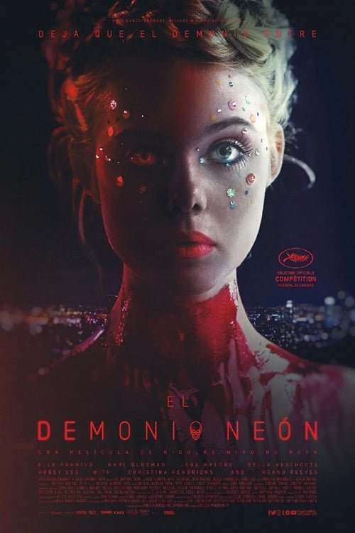

The Neon Demon (2016)
Sinopsis Rápida
En el despiadado mundo de la moda de Los Ángeles, una joven modelo se convierte en el objeto de deseo y envidia de un grupo de mujeres letalmente bellas, desatando una espiral de obsesión y horror.
Sinopsis Detallada
Jesse, una aspirante a modelo con una belleza etérea, llega a la ciudad de los ángeles con la esperanza de alcanzar el éxito. Su belleza inocente atrae la atención de otras modelos que la admiran y envidian a partes iguales, desencadenando una serie de eventos perturbadores y macabros. La película explora los temas de la belleza, la obsesión, la vanidad y la superficialidad en la industria de la moda, presentando una atmósfera opresiva y una estética visualmente impactante. El director Nicolas Winding Refn crea una pieza de arte cinematográfico, llena de simbolismo y violencia estética, que no dejará indiferente a nadie. La película es una experiencia sensorial intensa y perturbadora.
¿Por qué tenés que verla?
- Una exploración inquietante y visualmente impactante de la obsesión y la superficialidad en el mundo de la moda.
- La dirección de Nicolas Winding Refn crea una atmósfera hipnótica y estilizada, con una estética visualmente cautivadora.
- Su estilo visual único y su temática perturbadora han generado un culto considerable y debates en torno a su representación de la belleza y la industria de la moda.
- La actuación de Elle Fanning es clave para la tensión y el misterio de la trama.
Idea Extra
Análisis de la estética visual y el simbolismo en 'The Neon Demon': una inmersión en el universo onírico de Nicolas Winding Refn.
{{CONTENIDO_RELACIONADO}}